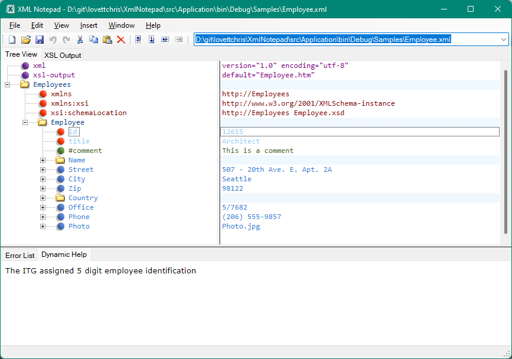

Dynamic Help#
When you have an associated XSD schema, the xsd:documentation associated with the current node is
displayed in a tooltip popup and in the Dynamic Help Tab.
For example, the Employee.xsd schema contains the following annotation on the definition of the Employee Id attribute:
<xs:simpleType name="EmployeeID">
<xs:annotation>
<xs:documentation xml:lang="en">The ITG assigned 5 digit employee identification</xs:documentation>
<xs:documentation xml:lang="fr">Le groupe ITG assignés 5 identification d'employé à chiffres</xs:documentation>
</xs:annotation>
<xs:restriction base="xs:string">
<xs:length value="5" />
</xs:restriction>
</xs:simpleType>
Now, if you open Employee.xml and select the Employee Id attribute you will see this annotation listed in the Dynamic Help tab as follows:
